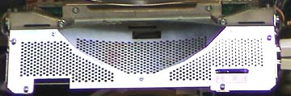
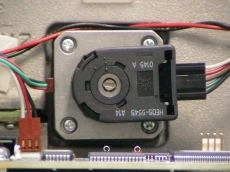
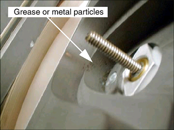

Operating Documentation
Direction 5181178-800, Rev# 16
BrightSpeed Select Service Methods Gen
Module Version 2.0, Version Date 3/14/08
Operating Documentation |
| Required Persons | Preliminary Reqs | Procedure | Finalization |
|---|---|---|---|
| 1 |
It is possible that the Bowtie Filter is contaminated and the Primary Copper Filter is not contaminated.
| NOTE: | Perform this inspection before installing the new tube unit. Also look at the tube side of the copper filter when you are swapping the interposer plate. Remove any debris found before installing the interposer plate on the new tube unit. |
| Last Revised: | 6 March 2008 |
Remove the Collimator Control Board Sheet Metal Cover. See Illustration 1
Illustration 1: Collimator Control Board Cover

| ||||
| Do Not Attempt to Move the Filter with Power ON. | ||||
| ||||
| Do not force the filter if it feels stuck. Damage to the limit switch can result. | ||||
| ||||
| Do not move the filter more than necessary for inspection. The filter can fall off the drive screw. | ||||
With power removed from the gantry, turn the position adjuster to position the bowtie filter assembly so it is visible through the input port or tube side of the collimator assembly.
CCW will move the filter into the beam. See Illustration 2.
Do not move the filter back to the home position.
Illustration 2: Filter Position Adjuster

Using a flashlight, inspect the bowtie filter for contamination. Reference Illustration 3.
Look through the input port or tube side of the collimator.
If contamination is visible, proceed to: Collimator Cleaning Procedure
Illustration 3: Contaminated Bowtie Filter

No finalization steps.